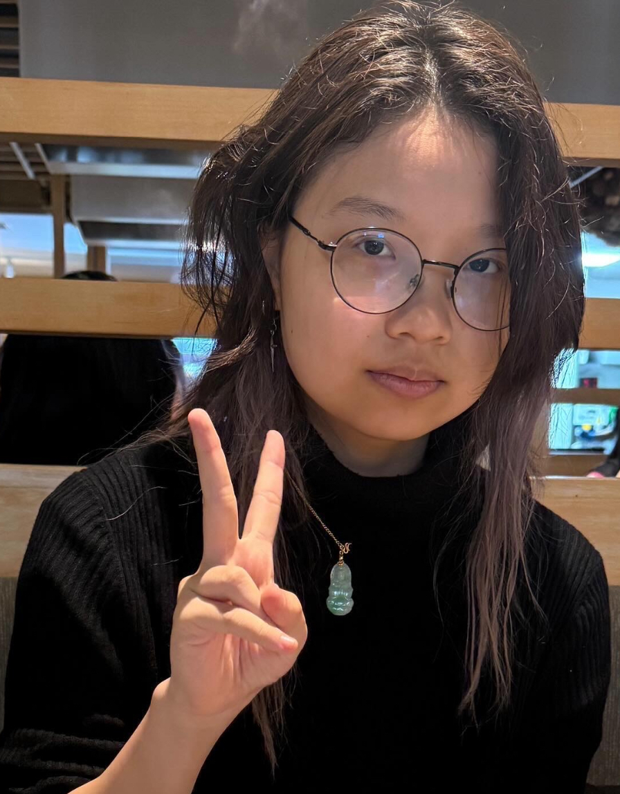

Lina Pan, a mediamaker that enjoys exploring different aesthetics in art and doesn't have a consistent art style. However, she mainly enjoys Surrealism where the art feels so abnormal and uncanny. An example is The Persistence of Memory by Salvador Dali, the art transports you into a wonderland that makes you want to understand the deeper meaning behind all the objects that were painted by the artist and why he chose it. What makes the art so fascinating is how it defies common logic. When we think of clocks, we all think about a solid round object that's hanging on the wall inside some building. But in The Persistence of Memory the clock isn't normal, it's soft and liquidy, lying on the ground in the middle of nowhere where clocks shouldn't be or normally be.
What makes art even more beautiful is how each of us interpret the meaning so differently yet there is no correct answer, it is just up to your interpretation. The uncanniness inspires me to create something similar with an eerie and unsettling atmosphere like the Backroom by Kane Parsons or Endacopia by AndyL4nd with the liminal space and dream-like fantasy aspects. These aspects make the art tell a more unique story, forcing you to view outside the box, and your artwork shouldn't have to be one-to-one with the real world. Let your art be bizarre. Instead of making an apple circular, why not triangular? Instead of red, why not blue?